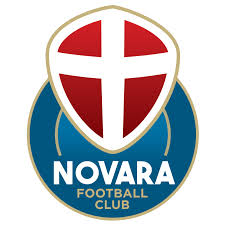

Novara

Il Novara Football Club, meglio noto come Novara, è una società calcistica italiana con sede nella città di Novara. Milita in Serie C.
Prosegue la tradizione sportiva del "Novara Calcio", sodalizio fondato nel 1908, che ha disputato per tredici volte il campionato di Serie A, l'ultima nella stagione 2011-2012, e vi ha conseguito come miglior risultato l'ottavo posto nell'annata 1951-1952; ha giocato inoltre una finale di Coppa Italia nell'edizione 1938-1939. Escluso nel 2021 dai campionati professionistici, il Novara Calcio è stato dichiarato fallito due anni dopo. Vanta la 30ª miglior tradizione sportiva in Italia.